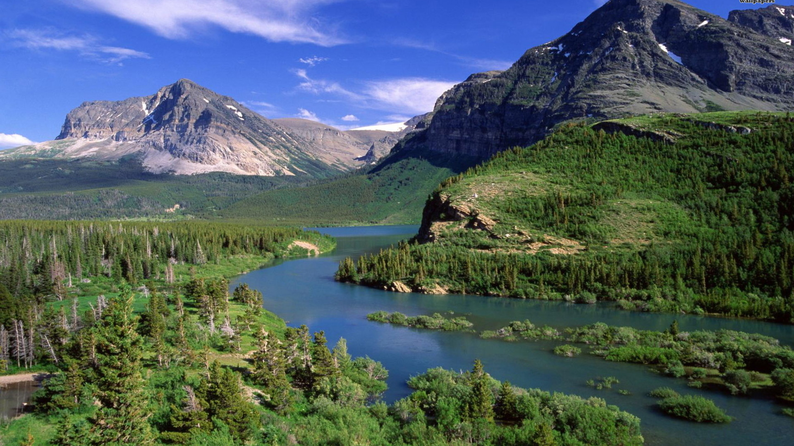

Video Conferencing of Montana is a network of court reporters across Montana who offer IP based video conference services. Whether in Montana or around the world, these offices can assist you with your video conference needs. The cities listed above include links to their location. Contact them anytime for current rates and scheduling opportunities.
